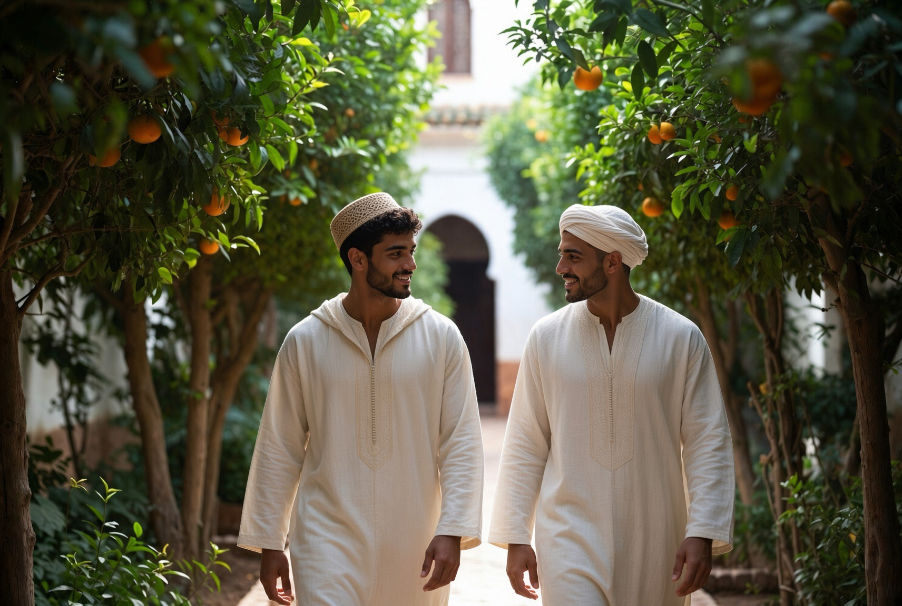

Vie au Riad
Une journée ordonnée. Cinq prières canoniques, travail des métiers, formation du corps et de l'esprit, repas partagés, silence.
الرِّياضُ لِأَهْلِهِ، لَا أَهْلُهُ لِلرِّياضِ
« Le riad est pour les siens, non les siens pour le riad. »

Le Riad n'est pas un hôtel. C'est une maison qui vit selon un rythme clair : la prière structure le temps, le geste forme la main, l'étude et le corps complètent la journée. Ici, on ne consomme pas une ambiance — on entre, pour un temps mesuré, dans une forme de vie.
Les cinq prières canoniques — Fajr, Dhuhr, Asr, Maghrib, Isha — ne sont pas un décor spirituel. Elles ordonnaient déjà la journée des maisons traditionnelles ; ici, elles continuent de le faire.
Entre l'aube et la nuit, le travail des métiers, la formation, les repas partagés et le silence trouvent chacun leur place exacte.

PRIÈRE CANONIQUE — AUBE
Fajr
L'aube. La maison se lève dans le silence. La prière ouvre le jour avant le bruit et avant le travail. Puis le petit déjeuner frugal, et le début de l'étude.

PRIÈRE CANONIQUE — MIDI
Dhuhr
Le zenith. Pause du travail. La prière, puis le repas partagé. La table commune est un lieu de formation autant que de nourriture.

PRIÈRE CANONIQUE — APRÈS-MIDI
Asr
L'après-midi. Retour à l'atelier ou au corps. La lumière baisse ; le geste continue, plus concentré.

PRIÈRE CANONIQUE — COUCHER DU SOLEIL
Maghrib
Le couchant. La journée de travail s'achève. Prière, puis le dîner. La conversation du soir peut commencer.

PRIÈRE CANONIQUE — NUIT
Isha
La nuit. Dernière prière. Puis le silence. La maison se recueille. Pas de bruit après Isha — sauf, parfois, une veillée de samāʿ ou une conversation discrète.
Le métier, le corps, l'étude : entre les prières, la journée est pleine. Atelier le matin, formation physique ou discipline choréutique l'après-midi, selon le rythme de la maison et le parcours de chacun.
Ce n'est pas un programme à consommer. C'est une forme de vie à laquelle on s'accorde — pour un stage, un séjour, ou la résidence longue.